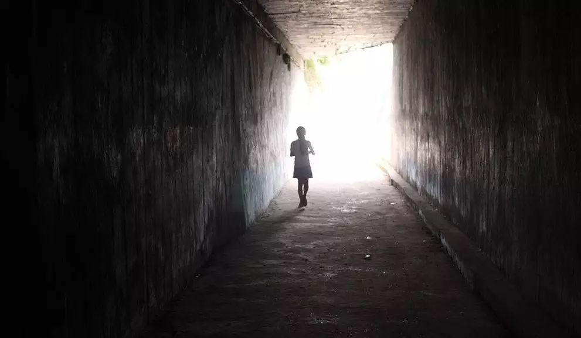
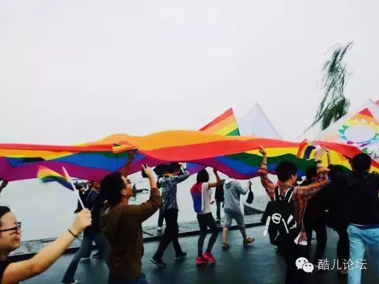

拾光 | 酷儿永生

酷儿论坛（Motss.info）BBS服务在2016年4月1日停止了，这里是很多人的回忆，也有很多人表示了不舍，原因在停止服务的时候已经向大家说明过。虽然论坛仍然可以访问，但是考虑到大部分人并没有访问BBS的习惯，瓜瓜以后会慢慢地把以前论坛上的优质内容搬运到微信公众号上来，方便大家阅读。
第一次就以这篇老会员对于论坛BBS停止服务的心声开始吧。

刚刚看到酷儿论坛即将停止运营了，感慨万千。时间很晚了，随便说点吧。
他承载了很多人美好的回忆。一想起酷儿论坛，印象最深的是那些好人。暖阳曾经是个很天真、很积极、慈眉善目很和悦的人，给人以无限温暖和亲切感。他对论坛倾注了青春版的热情和理想主义；他承办了很多积阴德、造福我等的见面相亲活动。虽然在杭州期间，总觉心如浮萍郁郁寡欢，总想早日离开，也没有很积极地面对那里的人，没有找到自己的伴侣，但对暖阳等一干组织活动的人，心里的感念和赞美，不知有多深。
暖阳护理下的酷儿，是热情的酷儿，是青春的酷儿，是温暖的酷儿，是激情飞扬的酷儿，是热闹的酷儿。是一幕幕美好的聚会场景，是一个个眼神清澈心地善良的大男孩……
我从去年开始，精神没有以前亢奋了，写文章少了，最近想恢复过来。去年清明节的时候， 花了三天的时间在学校bbs上写了一篇有关大学精神的四万字长文，之后的半年，再也没写过教育评论；直到春节晚上，才又写了一篇。在重庆期间，写的东西虽然有几篇，但很少。不是因为新媒体的冲激，而是心里平淡了。经常来论坛看帖子，没有新文章，早就为酷儿的生存担忧。没想到这一天终于来了。

活了30年了，经历了一茬又一茬的潮流，埋葬了一个又一个心爱的事物。bbs的没落，随着手机时代的到来，似乎是大势所趋，无人能挡。人气都跑到微信里去了，QQ和bbs面临灭顶之灾。我想说，微信虽然有其方便的地方，但绝对代替不了bbs或者博客，可以长篇大论。时代在埋葬我们美好事物的时候，我们没有能去挽回自己的心爱；我没有，他没有，大家都没有。酷儿今天没落了，给我敲醒了警钟，我不能懈怠，不能平淡，不能堕落，不能后退，要继续写，写，写，要把我的读者，我的人群，紧紧地拉住，传递我的思想、情感、心灵呼声，不要和我心念的人失去联络。
我时常想念论坛上好几个人，暖阳，之八，那个广东的IT男，那个学美术的，那个读哲学的，那个数学系的，那个绝顶聪明学计算机的，那个喜欢看我文章去了北京的，那个去国外读硕士的大眼睛男孩，那个胖乎乎极可爱的男神，重庆四川的老乡……很多很多，记忆力不行了，都想不起名字。

一批小男生接管了暖阳，用同样的青春热情、好奇、充满公民精神的激情，把酷儿打扮成了时尚的90后男生，但还是没有夺回手机微信移走的人气。
是的，远离我们的，其实是一个传播媒体，而不是酷儿在我们心目中的怀念和记忆。那些人，那些美好的心灵、友谊、怀念都还在，只是没聚集在这里罢了。酷儿永生！那些为我们牵线搭桥的红娘活动组织者，功德不朽！
愿我们继续在微信里热闹吧！
2016.4.16

*推荐阅读*